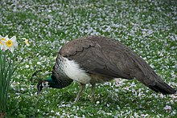

Peacock displaying in East Park,
Kingston upon Hull
Peahen at Tierpark Hagenbeck,
Germany
Least Concern (IUCN 3.1)[1]
| Domain: | Eukaryota |
| Kingdom: | Animalia |
| Phylum: | Chordata |
| Class: | Aves |
| Order: | Galliformes |
| Family: | Phasianidae |
| Genus: | Pavo |
| Species: | P.cristatus |
The Indian peafowl (Pavo cristatus), also known as the common peafowl, and blue peafowl, is a peafowl species native to the Indian subcontinent. It has been introduced to many other countries. Male peafowl are referred to as peacocks, and female peafowl are referred to as peahens, although both sexes are often referred to colloquially as a "peacock".[2]
Indian peafowl display a marked form of sexual dimorphism. The peacock is brightly coloured, with a predominantly blue fan-like crest of spatula-tipped wire-like feathers and is best known for the long train made up of elongated upper-tail covert feathers which bear colourful eyespots. These stiff feathers are raised into a fan and quivered in a display during courtship. Despite the length and size of these covert feathers, peacocks are still capable of flight. Peahens lack the train, have a white face and iridescent green lower neck, and dull brown plumage. The Indian peafowl lives mainly on the ground in open forest or on land under cultivation where they forage for berries, grains but also prey on snakes, lizards, and small rodents. Their loud calls make them easy to detect, and in forest areas often indicate the presence of a predator such as a tiger. They forage on the ground in small groups and usually try to escape on foot through undergrowth and avoid flying, though they fly into tall trees to roost.
The function of the peacock's elaborate train has been debated for over a century. In the 19th century, Charles Darwin found it a puzzle, hard to explain through ordinary natural selection. His later explanation, sexual selection, is widely but not universally accepted. In the 20th century, Amotz Zahavi argued that the train was a handicap, and that males were honestly signalling their fitness in proportion to the splendour of their trains. Despite extensive study, opinions remain divided on the mechanisms involved.
The bird is celebrated in Hindu and Greek mythology, and is the national bird of India. The Indian peafowl is listed as of Least Concern on the IUCN Red List.
Carl Linnaeus in his work Systema Naturae in 1758 assigned to the Indian peafowl the technical name of Pavo cristatus (means "crested peafowl" in classical Latin).
The earliest usage of the word in written English is from around 1300 and spelling variants include pecok, pekok, pecokk, peacocke, peacock, pyckock, poucock, pocok, pokok, pokokke, and poocok among others. The current spelling was established in the late 17th century. Chaucer (1343–1400) used the word to refer to a proud and ostentatious person in his simile "proud a pekok" in Troilus and Criseyde (Book I, line 210).[3]
The Sanskrit, later Pali, and modern Hindi term for the animal is maur. It is debated that the nomenclature of the Maurya Empire, whose first emperor Chandragupta Maurya was raised and influenced by peacock farmers,[4] was named after the terminology.
The Greek word for peacock was taos and was related to the Persian "tavus" (as in Takht-i-Tâvus for the famed Peacock Throne[5]). The Ancient Hebrew word tuki (plural tukkiyim) has been said to have been derived from the Tamil tokei but sometimes traced to the Egyptian tekh.[6][7] In modern Hebrew the word for peacock is "tavas". In Sanskrit, the peacock is known as Mayura and is associated with the killing of snakes.

Male neck detail
Peacocks are a larger sized bird with a length from bill to tail of 100 to 115 cm (39 to 45 in) and to the end of a fully grown train as much as 195 to 225 cm (77 to 89 in) and weigh 4–6 kg (8.8–13.2 lb). The females, or peahens, are smaller at around 95 cm (37 in) in length and weigh 2.75–4 kg (6.1–8.8 lb). Indian peafowl are among the largest and heaviest representatives of the Phasianidae. So far as is known, only the wild turkey grows notably heavier. The green peafowl is slightly lighter in body mass despite the male having a longer train on average than the male of the Indian species. Their size, colour and shape of crest make them unmistakable within their native distribution range. The male is metallic blue on the crown, the feathers of the head being short and curled. The fan-shaped crest on the head is made of feathers with bare black shafts and tipped with bluish-green webbing. A white stripe above the eye and a crescent shaped white patch below the eye are formed by bare white skin. The sides of the head have iridescent greenish blue feathers. The back has scaly bronze-green feathers with black and copper markings. The scapular and the wings are buff and barred in black, the primaries are chestnut and the secondaries are black. The tail is dark brown and the "train" is made up of elongated upper tail coverts (more than 200 feathers, the actual tail has only 20 feathers) and nearly all of these feathers end with an elaborate eye-spot. A few of the outer feathers lack the spot and end in a crescent shaped black tip. The underside is dark glossy green shading into blackish under the tail. The thighs are buff coloured. The male has a spur on the leg above the hind toe.[8][9]
The adult peahen has a rufous-brown head with a crest as in the male but the tips are chestnut edged with green. The upper body is brownish with pale mottling. The primaries, secondaries and tail are dark brown. The lower neck is metallic green and the breast feathers are dark brown glossed with green. The remaining underparts are whitish.[8] Downy young are pale buff with a dark brown mark on the nape that connects with the eyes.[10] Young males look like the females but the wings are chestnut coloured.[10][11]
The most common calls are a loud pia-ow or may-awe. The frequency of calling increases before the Monsoon season and may be delivered in alarm or when disturbed by loud noises. In forests, their calls often indicate the presence of a predators such as the tiger.[8][11] They also make many other calls such as a rapid series of ka-aan..ka-aan or a rapid kok-kok.[11][12] They often emit an explosive low-pitched honk! when agitated.

Black-shouldered Indian Peafowl Pavo cristatus from private collection of Coenraad Jacob Temminck (1778–1858), held at Naturalis Biodiversity Center, Leiden, the Netherlands.

A white peafowl that is maintained by selective breeding in many parks such as this one at the Jardin des Plantes, Paris. This leucistic mutation is commonly mistaken for an albino.

Peacock performing courtship at Yala National Park, Sri Lanka

female with chick in Sri Lanka
There are several colour mutations of Indian peafowl. These very rarely occur in the wild, but selective breeding has made them common in captivity. The black-shouldered or Japanned mutation was initially considered as a subspecies of the Indian peafowl (P. c. nigripennis) (or even a separate species (P. nigripennis))[13] and was a topic of some interest during Darwin's time. Others had doubts about its taxonomic status, but the English naturalist and biologist Charles Darwin (1809–1882) presented firm evidence for it being a variety under domestication, which treatment is now well established and accepted. It being a colour variation rather than a wild species was important for Darwin to prove, as otherwise it could undermine his theory of slow modification by natural selection in the wild.[14] It is, however, only a case of genetic variation within the population. In this mutation, the adult male is melanistic with black wings.[10][15] Young birds with the nigripennis mutation are creamy white with fulvous-tipped wings. The gene produces melanism in the male and in the peahen it produces a dilution of colour with creamy white and brown markings. Other forms include the pied and white mutations, all of which are the result of allelic variation at specific loci.[16][17]
Crosses between a male green peafowl (Pavo muticus) and a female Indian peafowl (P. cristatus) produce a stable hybrid called a "Spalding", named after Mrs. Keith Spalding, a bird fancier in California.[18] There can be problems if birds of unknown pedigree are released into the wild, as the viability of such hybrids and their offspring is often reduced (see Haldane's rule and outbreeding depression).[19][20]
The Indian peafowl is a resident breeder across the Indian subcontinent and inhabits the drier lowland areas of Sri Lanka. In the Indian subcontinent, it is found mainly below an elevation of 1,800 m (5,900 ft) and in rare cases seen at about 2,000 m (6,600 ft).[21] It is found in moist and dry-deciduous forests, but can adapt to live in cultivated regions and around human habitations and is usually found where water is available. In many parts of northern India, they are protected by religious practices and will forage around villages and towns for scraps. Some have suggested that the peacock was introduced into Europe by Alexander the Great,[22] while others say the bird had reached Athens by 450 BCE and may have been introduced even earlier.[23] It has since been introduced in many other parts of the world and has become feral in some areas.[11]
The Indian peafowl has been introduced to the United States, the United Kingdom,[24] United Arab Emirates, France, Mexico, Honduras, Costa Rica, Colombia, Guyana, Suriname, Brazil, Uruguay, Argentina, South Africa, Spain, Portugal, Greece, Italy, Madagascar, Mauritius, Réunion, Indonesia, Papua New Guinea, Australia, New Zealand, Croatia and the island of Lokrum.[25]
The first whole-genome sequencing of Indian peafowl identified a total of 15,970 protein-coding sequences, along with 213 tRNAs, 236 snoRNAs, and 540 miRNAs. The peacock genome was found to have less repetitive DNA (8.62%) than that of the chicken genome (9.45%). PSMC analysis suggested that the peacock suffered at least two bottlenecks (around four million years ago and again 450,000 years ago), which resulted in a severe reduction in its effective population size.[26]
Peafowl are best known for the male's extravagant display feathers which, despite actually growing from their back, are thought of as a tail. The "train" is in reality made up of the enormously elongated upper tail coverts. The tail itself is brown and short as in the peahen. The colours result not from any green or blue pigments but from the micro-structure of the feathers and the resulting optical phenomena.[27] The long train feathers (and tarsal spurs) of the male develop only after the second year of life. Fully developed trains are found in birds older than four years. In northern India, these begin to develop each February and are moulted at the end of August.[28] The moult of the flight feathers may be spread out across the year.[29]
Peafowl forage on the ground in small groups, known as musters, that usually have a cock and 3 to 5 hens. After the breeding season, the flocks tend to be made up only of females and young. They are found in the open early in the mornings and tend to stay in cover during the heat of the day. They are fond of dust-bathing and at dusk, groups walk in single file to a favourite waterhole to drink. When disturbed, they usually escape by running and rarely take to flight.[11]
Peafowl produce loud calls especially in the breeding season. They may call at night when alarmed and neighbouring birds may call in a relay like series. Nearly seven different call variants have been identified in the peacocks apart from six alarm calls that are commonly produced by both sexes.[30]
Peafowl roost in groups during the night on tall trees but may sometimes make use of rocks, buildings or pylons. In the Gir forest, they chose tall trees in steep river banks.[31][32] Birds arrive at dusk and call frequently before taking their position on the roost trees.[33] Due to this habit of congregating at the roost, many population studies are made at these sites. The population structure is not well understood. In a study in northern India (Jodhpur), the number of males was 170–210 for 100 females but a study involving evening counts at the roost site in southern India (Injar) suggested a ratio of 47 males for 100 females.[12]